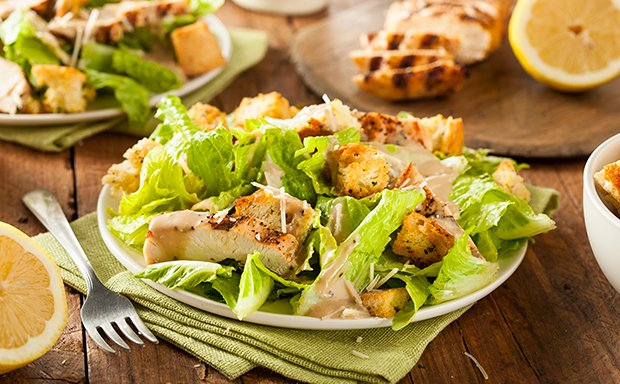
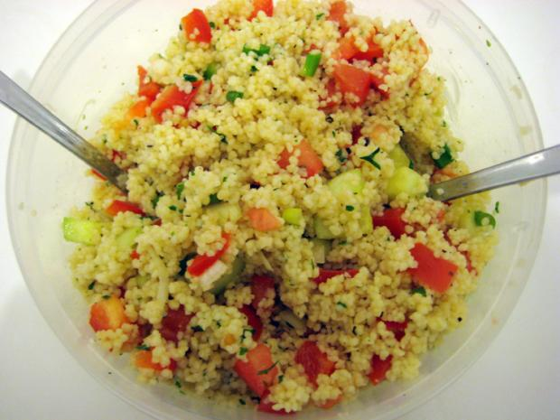

Kochlessia
Salate
Ceasers Salad

Du brauchst
Dressing
- 2 TL Dijon-Senf
- 2 Stk Eier
- 2 Stk Knoblauchzehen
- 200 ml Olivenöl
- 1 Prise Salz
- 45 g Sardellenfilets
- 1 TL schwarzer Pfeffer, gemahlen
- 2 EL Zitronensaft
restliche Zutaten
- 400 g angebratene Pouletstücke
- 1 Stk Baguette
- 45 g Butter
- 4 Stk Knoblauchzehen
- 125 ml Olivenöl
- 150 g Parmesankäse, gerieben
- 1 Stk römischer Salat, ohne äussere Blätter
Zubereitung
- Für die Croutons das Baguette würfelig schneiden. In einer Pfanne Olivenöl und Butter erwärmen und
zerdrückten Knoblauch dazurühren. Baguettewürfel darin knusprig anbraten und auf Küchenpapier abtropfen lassen.
- Für das Dressing Zitronensaft, Eier, Senf, Knoblauch, und Sardellenfilets in einer Küchenmaschine zerkleinern.
Langsam das Öl einrühren, gut vermischen und mit Salz und Pfeffer würzen.
- Das Pouletfleisch klein schneiden, die Salatblätter waschen und in mundgerechte Stücke reissen.
- Falls man für den Cäsarsalat kein fertig, grilliertes Poulet zur Verfügung hat nimmt man ein Pouletbrustfilet,
schneiden dieses in mundgerechte Stücke, würzt es ein wenig mit Salz und Pfeffer und brät es in einer Pfanne
mit ein wenig Öl auf allen Seiten gut an.
- Anschliessend das Hühnerfleisch, Salat, Croutons und Parmesan in eine Schüssel geben. Dressing darüber, gut vermengen,
mit Pfeffer abschmecken und anrichten.
Sommer Salat
Du brauchst
Sauce
- 150g Teigwaren (z.B Karma Kichererbsen Fusilli)
- 1 Broccoli (ca. 400 g), in Röschen, Strunk, geschält, in ca. 1 cm dicken Scheiben
- Salzwasser, siedend
- 150g verschiedenfarbige Cherry-Tomaten, halbiert
- 1 Gurke, geschält, geviertelt, entkernt, in Würfeli
- 100g Gruyère, in 1 cm grossen Würfeln
Pastasalat
- ½ Bio-Zitrone, abgeriebene Schale und Saft
- 2EL Olivenöl
- ½dl Gemüsebouillon
- 4 Stk Knoblauchzehen
- 90g Jogurt nature
- 2EL Schnittlauch, fein geschnitten
- ½TL Salz
- ein wenig Pfeffer
Zubereitung Pastasalat
Fusilli und Broccoli im Salzwasser knapp al dente kochen, abtropfen, auskühlen.
Fusilli und Broccoli mit allen Zutaten bis und mit Gruyère in einer Schüssel mischen.
Zubereitung Sauce
Zitronenschale und alle Zutaten bis und mit Jogurt verrühren, Schnittlauch daruntermischen,
würzen. Salat und Sauce mischen.
Couscous Salat

Du brauchst
- 250g Instant-Couscous (gibt's in Supermärkten oder orientalischen Läden)
- 1/4 Salatgurke
- 1 Tomate
- 1/2 rote Paprika
- 1 kleine Zwiebel oder 2 Stangen Frühlingszwiebeln
- 1 Zitrone
- 3 Esslöffel Olivenöl
- Salz und Pfeffer
- frische Petersilie (oder Tiefkühlpetersilie)
Zubereitung
- 250 ml gesalzenes Wasser in einem kleinen Topf zum Kochen bringen. Sobald das Wasser sprudelnd kocht, Topf von
der Herdplatte nehmen und direkt das Instant-Couscous einrühren. Beiseite stellen und mindestens 5 Minuten quellen lassen.
- Gurke und Zwiebel schälen, Tomate waschen und Paprika putzen (Kerne entfernen und waschen). Alles in kleine Würfel
schneiden und vermischen. Salz über das gewürfelte Gemüse streuen.
- Die Zitrone auspressen und die Petersilie waschen und klein hacken.
- Zitronensaft mit 2 Esslöffel Olivenöl, Salz und Pfeffer verrühren.
- Einen Esslöffel Olivenöl über das fertig aufgequollene Couscous geben und kräftig mit einer Gabel durchrühren,
so dass die Körner nicht zusammenkleben und schön locker werden.
- Jetzt das Couscous mit dem gewürfelten Gemüse vermischen, das Zitronensaft-Öl-Dressing dazugeben und die gehackte
Petersilie darüber streuen. Alles kräftig durchmischen und fertig!
- Dieser Couscous-Salat passt gut als Beilage zu gegrilltem und gebratenem Fleisch oder er kann alleine als gesunde
Mahlzeit gegessen werden. Er ist auch hervorragend als Beilage beim Grillen im Sommer geeignet!